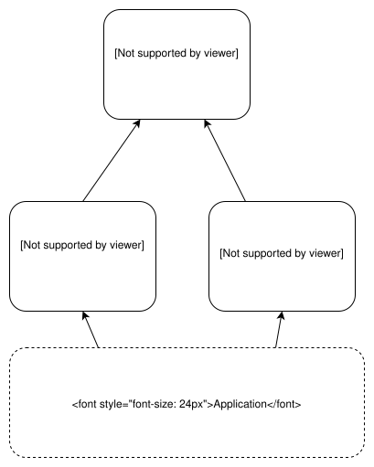
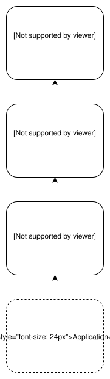

Faking Python Imports
Background
I’m currently working on a Flask project and I wanted to combine two packages
(Flask-CDN and
Flask-Static-Digest)
that both modify Flask’s url_for function.
Problem
However, these two packages are not made to work together. Flask-CDN overrides the
url_for function in the context of templates. Once that function is called,
it applies its processing and then calls Flask’s underlying url_for function.
Flask-Static-Digest works similarly, but instead defines a new
function static_url_for. This function still ends up calling url_for.

What I wanted was to have Flask-Static-Digest call the url_for function of Flask-CDN
so that I could combine the features of both.

I really wanted to avoid editing code of the dependencies if at all possible, so I tried to see if I could get Flask-Static-Digest to import Flask-CDN while making it think it was importing Flask.
Solution
The answer is yes, you can do this, by overwriting sys.modules. Here is an example:
a.py
def func(val):
print("A")
return val + 5b.py
def func(val):
print("B")
return val + 10c.py
import a
def func(val):
return a.func(val)main.py
import sys
import c
VAL = 20
print("The real value of c.func is: {}".format(c.func(VAL)))
# ideally, you would have never imported this module
sys.modules.pop("c")
# create reference to real import so we don't lose it
a_real_import = __import__("a")
a_fake_import = __import__("b")
# fake the import
sys.modules["a"] = a_fake_import
import c
# set it back to the real value
sys.modules["a"] = a_real_import
print("The fake value of c.func is: {}".format(c.func(VAL)))And after running main.py:
$ > python main.py
A
The real value of c.func is: 25
B
The fake value of c.func is: 30The dictionary sys.module contains references to every module you have imported.
Python 3.8.2 (tags/v3.8.2:7b3ab59, Feb 25 2020, 23:03:10) [MSC v.1916 64 bit (AMD64)] on win32
Type "help", "copyright", "credits" or "license" for more information.
>>> import sys
>>> import string
>>> sys.modules["string"]
<module 'string' from 'C:\\Python38\\lib\\string.py'>
>>>All you have to do is inject or overwrite your own values. For reference, here is what I’ve done in my Flask app:
# static digest
# we need this to call the CDN's url_for and not flask
# don't try this at home, kids
flask_cdn_import = __import__("flask_cdn")
flask_real_import = __import__("flask")
# replace real flask import with fake flask cdn import
sys.modules["flask"] = flask_cdn_import
# import the flask digest module with the fake import
from flask_static_digest import FlaskStaticDigest # noqa
# put the flask module back to what it was
sys.modules["flask"] = flask_real_import
# run the class init from flask digest
static_digest = FlaskStaticDigest()Conclusion
While this trick can be very useful, it can also very dangerous and easy to break stuff. Remember, with great power comes great responsibility.